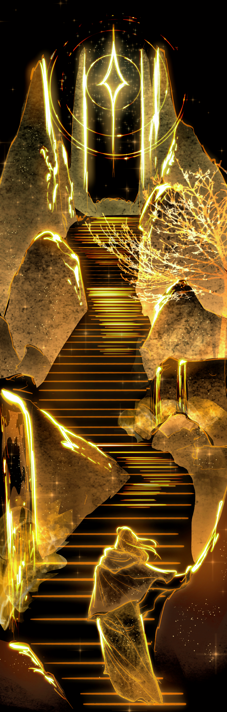

Creating characters with somewhere to go.
I've been drawing since the day I could hold a pencil. All my life i've been inspired by the worlds other create. From the little train that could to One Piece.
My work begins with characters, ideas, and worlds that usually have more going on beneath the surface. I enjoy designing visuals that communicate personality and story before a single word is spoken.
Character design, illustration, and worldbuilding naturally overlap in my process. Every visual detail has the opportunity to say something about the person, place, or story behind it.